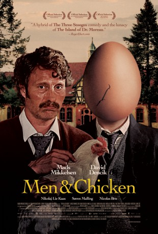

#2700 Men & Chicken
 
 IMDB-Wertung: 6.7 / 10
IMDB-Wertung: 6.7 / 10  Metascore: 64
Metascore: 64 
Gabriel and Elias are two very different brothers. Gabriel is a worn down university professor and Elias is a man whose only concern is women and trivial knowledge. During a lecture Gabriel receives a phone call. Their father is dead. Things take a turn when the brothers learn through a videotape recorded by their now late father, that he in fact wasn't their biological father. Gabriel and Elias discover that their biological father lives on the island Ork. They set out to the island and here they meet their real family. The brothers' first meeting with the family doesn't go as expected. Gabriel and Elias are stranded in the marshland of Ork. Here they meet the mayor of Ork and his daughter Ellen, a neurotic woman who hates her life, herself, her father and the island. Surrounded by abnormal people, Gabriel and Elias discover the truth about themselves and their relatives. A truth that while paralyzing them also sets them free.
Jahr: 2015
Dauer: 104 Minuten
FSK: 12
Land: Dänemark Studio: DCM Film DistributionTonspuren:
Untertitel: Deutsch,
Auflösung: 1080p (1920x800) Größe: 4177 MB
Genre: Drama, Sci-Fi, Komödie, Mystery
Regisseur: Anders Thomas Jensen
Drehbuch: Anders Thomas Jensen
Soundtrack: Frans Bak, Jeppe Kaas
Darsteller:
 David Dencik als Gabriel
David Dencik als Gabriel Mads Mikkelsen als Elias
Mads Mikkelsen als Elias Nikolaj Lie Kaas als Gregor
Nikolaj Lie Kaas als Gregor Søren Malling als Franz
Søren Malling als Franz Nicolas Bro als Josef
Nicolas Bro als Josef Rikke Louise Andersson als Sara
Rikke Louise Andersson als Sara- Ulla Asbjørn-Damsted als Gæst
- Thor Bisbjerg als Hvid kittel II
- Valdemar Bemmann Bredning als Boy I
- Lisbet Dahl als Susan
- Johnny Didriksen als Hvid kittel V
- Matti Ehlers als Dreng børnehaven
- Daniel Engstrup als Hvid kittel I
- Jens Fitzau als Tjener I
- Agnes Franch als Epilog pige II
- Anders Hansen als Gæst
- Poul Ib Henriksen als Lennart
- Stig Hoffmeyer als Adrian
- Kim S.G. Jensen als Gæst
- Bodil Jørgensen als Ellen
- Tobias Kowalczyk als Boy 2
- Brian Kristiansen als Hvid kittel III
- Ingelise Larsen als Tove
- Kirsten Lehfeldt als Doctor Abbot
- Lasse Low als Tjener II
- Lars Lunøe als Mogens Hansen
- Maj-Britt Mathiesen als Mia
- Phillip Møller als Døds Bo
 Birthe Neumann als Inger Lis
Birthe Neumann als Inger Lis- Kjeld Nørgaard als Ferry Operator
- Jan Petersen als Hvid kittel VI
- Lars Petersen als Gæst
- Noam Sattrup als Epilog baby
- Anton Degner Steffen als Epilog dreng I
- Noah Stokholm als Dreng børnehaven
- Kent Theil-Gjersen als Hvid kittel IV
- Ole Thestrup als Flemming
Datei: X:\2015(G-M)\Men & Chicken (2015, FSK12, 1920x800).mkv seit 03.12.2015
Festplatte: HD 2015(A-Z)
 Es gibt insgesamt 129 Filme in der Gruppe '2015(G-M)'
Es gibt insgesamt 129 Filme in der Gruppe '2015(G-M)'